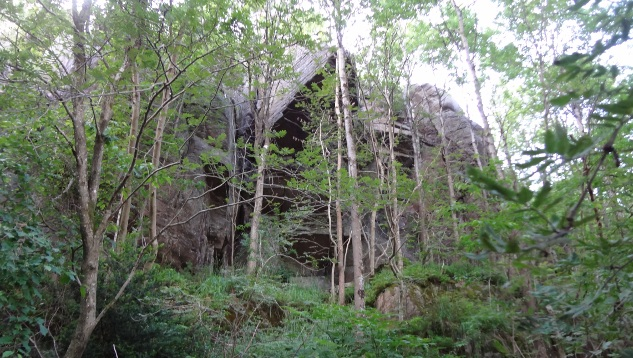

Orion
Allmänt
Fin klippa i Gärdsås med få men fina linjer. Värd ett besök!
Miljö
Kort anmarsch. Klippan ligger avskilt i en vacker, ganska tät skog som ger skugga på sommaren trots sydostligt läge.

Vägbeskrivning
Fin klippa i sydost-läge precis intill (väster om) vägen Orion i Gärdsås. En kort promenad från Utby. 15 min från spårvagnen (Linje 11/7/6 - Kortedala torg). Mindre än 5 min från bussen (Linje 58 - Gärdsåsgatan).
Leder
- 1
- Rigel
- 6+
- Uppenbar, kort, takspricka. Hand, fist och mitt emellan.
- 2
- Betelgeuse
- 5+
- Harmonisk led med ett lite bökigare krux i bred spricka. Från högt startgrepp, långa sträckningar ut längs högerkanten. Efter några meter tar den vänstra sprickan vid - som sedan följs till toppen. Välsäkrad. Inga stora säkringsprylar nödvändiga.
- 3
- Sol
- 6
- Areten höger om Betelgeuse.
- 4
- Eld o lågor
- 7+
- Rakt upp för facet, utan aréten till vänster.
- 5
- Lösgodis
- 5-
- Lite lös, men rätt fin och rätt välsäkrad. Innerhörn först, sen låta bli att kliva ut vänster på stora hyllan, sen bred spricka / ytterhörn rakt upp.
- 6
- Projekt 1
- ?
- Otroligt inbjudande greppklättring längs högersidan med dragning vänster upp mot taket som pryds av en otroligt fin horisontell takspricka.
- 7
- Orions bälte
- 6+
- Grepp och layback till det kristallrika bältet. Sedan en något överhängande spricka till toppen.
- 8
- Projekt 2
- ?
- Sprickan strax till höger om Orions bälte.
kategori:Saknar skiss
kategori:Saknar koordinater
kategori:Saknar skrivarformatering
Category:Göteborg
Copyright (C) Permission is granted to copy, distribute and/or modify this document under the terms of the GNU Free Documentation License, Version 1.3